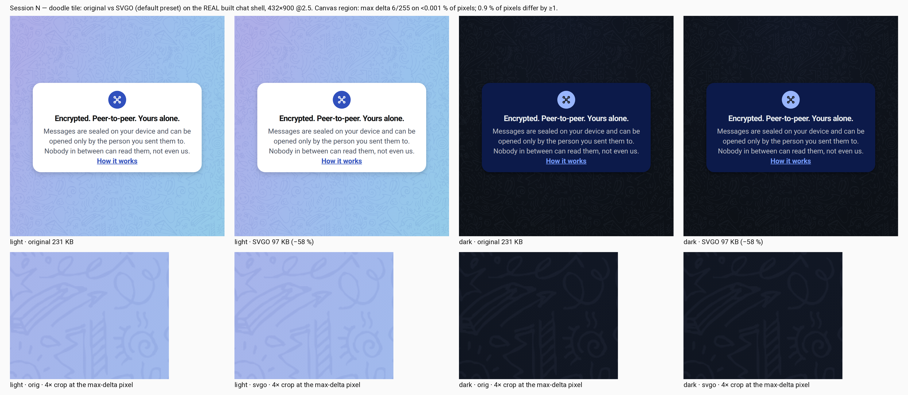

0 pass0 fail
0 n/a0 not scored
copied
Before you start
Wipe obj and bin, then build with F5, never a bare
dotnet build (#663). Three xaml pages LEFT the project this batch — a stale
obj keeps their generated .g.cs. Not Rebuild Solution.
Release builds now run the strip target. The log must say
Spixi: Release packaging strip applied; a machine without node on the
PATH fails LOUD there, by design (-p:SpixiStripHtml=false opts out).
The generators ran in the container and every gate is green. Full block in
docs/f5-checklist-session-n.md §0. Expected:
bundle 321 · shells 18 · smoke BASELINE OK 4125 / the 3 known (#136 · M5 · B3)
locales ALL CLEAN 786 · i18n-lint OK · pseudo 9/9 · cs-syntax 138 + 1 known gap
extract-strings --check OK · build-shells --check OK · build-legal-docs --check OK
A · The legacy purge (#789) — every surface that could have lost a route
Nothing here should LOOK different. A fail is a route that is gone: a legacy
page that used to appear, an icon that used to load, a flow that no longer opens.
B · The instruments (#791) — paste the lines
Release + dev-coexist on the Motorola. adb logcat -v time | Select-String CDPERF
into a file (Out-File -Encoding utf8). Three chat opens.
C · The strip fork (#792) — Release only
Gate 1 proves the package is a faithful transform of what was reviewed; gate 2 proves
the suite passes over it. Commands in the checklist §2C, one per block.
D · Your eye — nothing landed
D1 · The doodle tile under SVGO (#793). 231 → 97 KB per chat open. Rendered
on the real built shell, both themes; the canvas differs by at most 6/255 on fewer than 0.001 % of
pixels. The 4× crops are at the worst pixel. land / keep — one word.

D2 · The lossy PNG set. pngquant q80–98 takes the ten surviving PNGs 1.33 → 0.74 MB.
A palette quantisation is a visual change — render it first / no.
D3 · contacts-es.svg is a 325 KB base64 PNG wrapped in an SVG; its siblings are
640-px PNGs of ~40–190 KB. convert / keep.
D4 · The four Session M dials are still ? on the walk-M sheet:
Canvas-vs-Colour · None-vs-Off · doodles boost ×3 (×4.5 / ×2) · matrix swatch larger.
Designed, not built
The pre-warm (#794) — docs/prewarm-chat-spec.md. Tier 3 in your own ranking (#782),
C# lifecycle inside the overlay machinery, and the one thing #780 says to measure (chats-list frame
drops) needs the phone. The spec is the build minus the typing; one session with the phone in the room.
⛔ #779 stays parked.
Results
Walked — Android, 2026-09-05: 15 P · 0 F · 9 N/A (A10 not reproducible · A14/C1/C2 measured
from the container: the APK's html is 7.0 MB, spixi.tokens.css 30 688 B, GATE 1 OK · B1/B2 = the #796
capture · B3 two-device · B4 not built · C5 Debug build). Windows: "works as well, tried most". D1–D4 open.
The group Damir could not delete on the way = #797, fixed in the same batch (checklist §2E).